Omnissa Unified Access Gateway 2503
Navigation
- Change Log
- Overview
- PowerShell Deploy Script Method - both upgrade and new
- vSphere Client Deploy OVF method - Upgrade Existing, or Deploy New
- Web-based Admin Interface
- Add UAG to Horizon Console
- Monitor Sessions
- Logs and Troubleshooting
- Load Balancing
- UAG Authentication - SAML, RADIUS
- Other UAG Configurations - High Availability, Network Settings, System Settings
:idea: = Recently Updated
Change Log
- 2025 July 29 - updated Import OVF section for UAG 2503
- 2024 Jan 31 - SHA-1 thumbprint no longer supported. Replace with SHA-256 thumbprint (fingerprint).
- 2021 Sep 30 - Horizon Edge configuration - added instructions to disable CORS to fix HTML Access in Horizon 2106 and newer.
Overview
Unified Access Gateway provides remote connectivity to internal Horizon Agent machines. For an explanation of how this works (i.e., traffic flow), see Understand and Troubleshoot Horizon Connections at Omnissa Tech Zone.
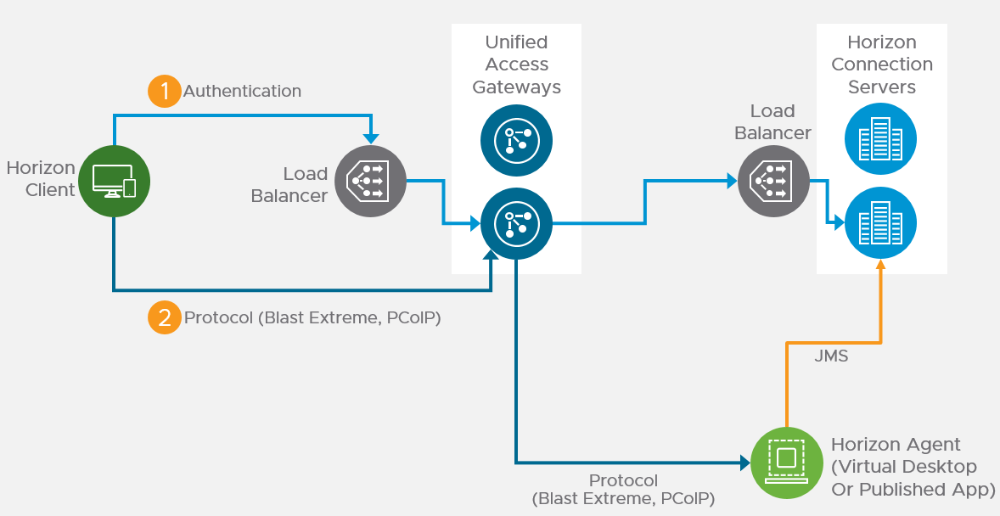
Unified Access Gateway (formerly known as Access Point) is a replacement for Horizon Security Servers. Advantages include:
- You don't need to build extra Connection Servers just for pairing. However, you might want extra Horizon Connection Servers so you can filter pools based on tags.
- Between Unified Access Gateway and Horizon Connection Servers you only need TCP 443. No need for IPSec or 4001 or the other ports. You still need 4172, 22443, etc. to the View Agents.
- No need to enable Gateway/Tunnel on the internal Horizon Connection Servers.
- Additional security with DMZ authentication. Some of the Authentication methods supported on Unified Access Gateway are RSA SecurID, RADIUS, CAC/certificates, etc.
However:
- It's Linux. You can deploy and configure the appliance without any Linux skills. But you might need some Linux skills during troubleshooting.
Horizon View Security Server has been removed from Horizon 2006 (aka Horizon 8).
- Some of the newer Blast Extreme functionality only works in Unified Access Gateway. See Configure the Blast Secure Gateway at Omnissa Docs.
More information at VMware Blog Post Technical Introduction to VMware Unified Access Gateway for Horizon Secure Remote Access.
Horizon Compatibility - Refer to the interoperability matrix to determine which version of Unified Access Gateway is compatible with your version of Horizon.
-
The latest version of UAG is 2503.
- You usually want the Non-FIPS version.
- Then download the PowerShell deployment scripts on the same UAG download page.
- You usually want the Non-FIPS version.


Firewall
Omnissa Tech Zone Omnissa Horizon Blast Extreme Display Protocol, and Firewall Rules for DMZ-Based Unified Access Gateway Appliances at Omnissa Docs.
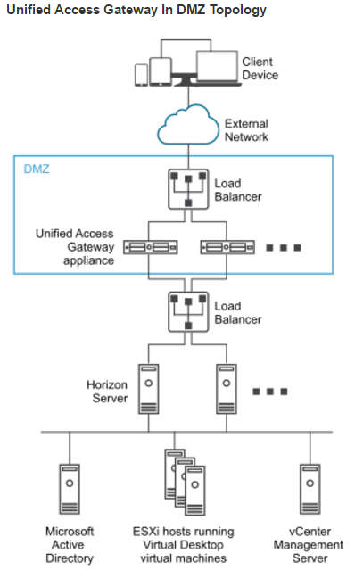
Open these ports from any device on the Internet to the Unified Access Gateway Load Balancer VIP:
- TCP and UDP 443
- TCP and UDP 4172. UDP 4172 must be opened in both directions. (PCoIP)
- TCP and UDP 8443 (for HTML Blast)
Open these ports from the Unified Access Gateways to internal:
- TCP 443 to internal Connection Servers (through a load balancer)
- TCP and UDP 4172 (PCoIP) to all internal Horizon View Agents. UDP 4172 must be opened in both directions.
- TCP 32111 (USB Redirection) to all internal Horizon View Agents.
- TCP and UDP 22443 (Blast Extreme) to all internal Horizon View Agents.
- TCP 9427 (MMR and CDR) to all internal Horizon View Agents.
Open these ports from any internal administrator workstations to the Unified Access Gateway appliance IPs:
- TCP 9443 (REST API)
- TCP 80/443 (Edge Gateway)
PowerShell Deploy Script
Omnissa Docs Using PowerShell to Deploy VMware Unified Access Gateway. The script runs OVF Tool to deploy and configure Unified Access Gateway. The PowerShell script is updated as newer versions of Unified Access Gateways are released. This is the recommended method of deploying Unified Access Gateway.
If you prefer to use vSphere Client to Deploy the OVF file, skip ahead to Upgrade or Deploy.
The PowerShell deployment script is downloadable from the UAG download page.

The PowerShell deploy script requires the OVF Tool:
- Download ovftool from Broadcom.

- On the machine where you will run the UAG Deploy script, install VMware-ovftool-...-win.x86_64.msi.
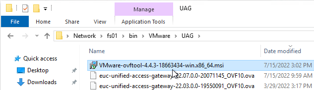
- In the Welcome to the VMware OVF Tool Setup Wizard page, click Next.
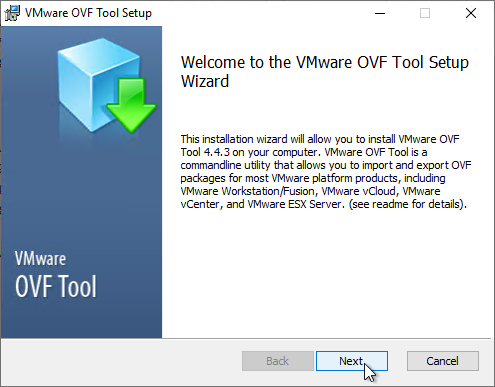
- In the End-User License Agreement page, check the box next to I accept the terms and click Next.
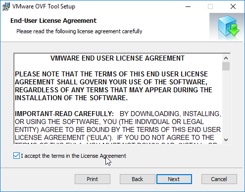
- In the Destination Folder page, click Next.
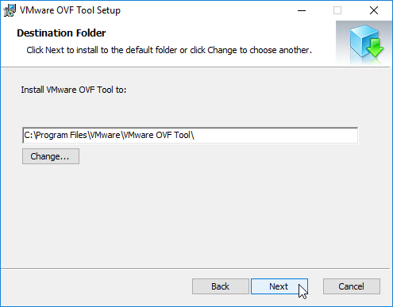
- In the Ready to install VMware OVF Tool page, click Install.
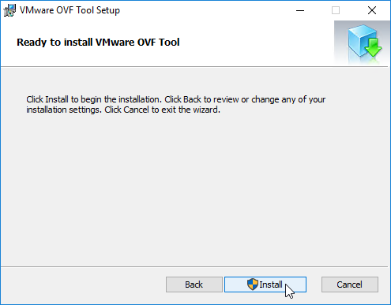
- In the Completed the VMware OVF Tool Setup Wizard page, click Finish.
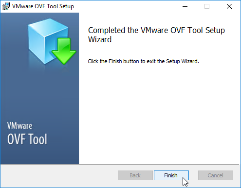
Create or Edit a UAG .ini configuration file:
- Extract the downloaded uagdeploy PowerShell scripts for your version of Unified Access Gateway.
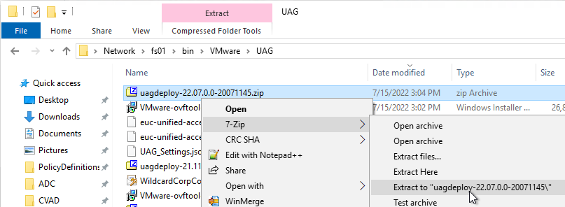
- If you have an existing UAG appliance, then you can download an INI of the configuration from the UAG Administrator page.
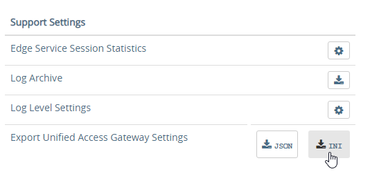
- Or copy and edit one of the downloaded .ini files, like uag2-advanced.ini.
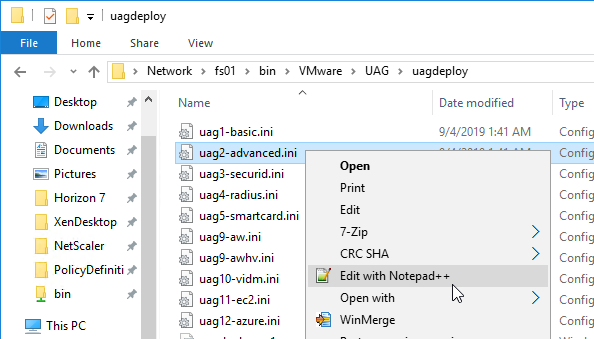
- Or copy and edit one of the downloaded .ini files, like uag2-advanced.ini.
- A full explanation of all configuration settings can be found at Using PowerShell to Deploy Unified Access Gateway at Omnissa Docs.
- For any value that has spaces, do not include quotes in the .ini file. The script adds the quotes automatically.
- The name setting specifies the name of the virtual machine in vCenter. If this VM name already exists in vCenter, then OVF Tool will delete the existing VM and replace it.
- Add a uagName setting and specify a friendly name. You'll later add this name to Horizon Console so you can view the health of the UAG appliance in Horizon Console.
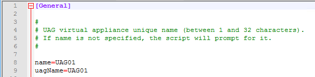
- You can optionally enable SSH on the appliance by adding sshEnabled=true.
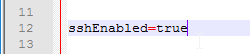
- For the source setting, enter the full path to the UAG .ova file.
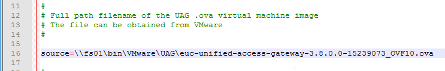
- For the target setting, leave PASSWORD in upper case. Don't enter an actual password. OVF Tool will instead prompt you for the password.
-
For the target setting, specify a cluster name instead of a host. If spaces, there's no need for quotes. For example:
-
Specify the exact datastore name for the UAG appliance.
- Optionally uncomment the diskMode setting.
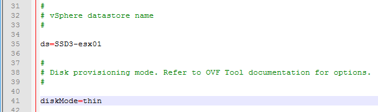
- For a onenic configuration (recommended), set the netInternet, netManagementNetwork, and netBackendNetwork settings to the same port group name.
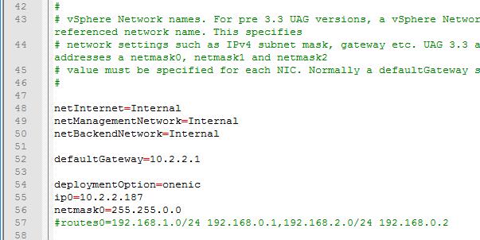
- Multiple dns servers are space delimited.
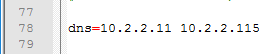
- For pfxCerts, UNC paths don't work. Make sure you enter a local path (e.g. C:\). OVA Source File can be UNC, but the .pfx file must be local.
- There's no need to enter the .pfx password in the .ini file since the uagdeploy.ps1 script will prompt you for the password.
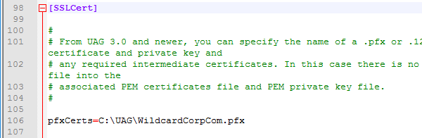
- proxyDestinationUrl should point to the internal load balancer for the Horizon Connection Servers.
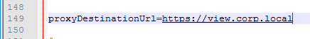
-
For proxyDestinationUrlThumbprints, paste in the sha256 or higher thumbprint of the Horizon Connection Server certificate in the format shown.
- If your Horizon Connection Servers each have different certificates, then you can include multiple thumbprints (comma separated).
- Make sure there's no hidden character between sha256 and the beginning of the thumbprint. Or you can just paste the thumbprint without specifying sha256. Note: sha1 is no longer supported. Edge and Chrome can show sha256 certificate fingerprint.

- Change the ExternalUrl entries to an externally-resolvable DNS name and a public IP address. For multiple UAGs, the FQDNs and public IP address should resolve to the load balancer. Note: your load balancer must support persistence across multiple port numbers (443, 8443, 4172).
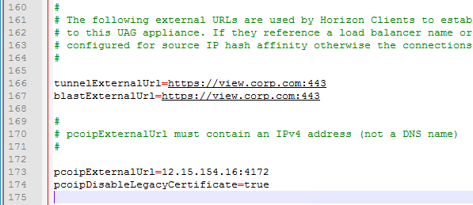
When you run the PowerShell script, if the UAG appliance already exists, then the PowerShell script will replace the existing appliance. There's no need to power off the old appliance since the OVF tool will do that for you.
- Open an elevated PowerShell prompt.
- Paste in the path to the uagdeploy.ps1 file. If there are quotes around the path, then add a & to the beginning of the line so PowerShell executes the path instead of just echoing the string.
- Add the -iniFile argument and enter the path to the .ini file that you modified. Press
to run the script.
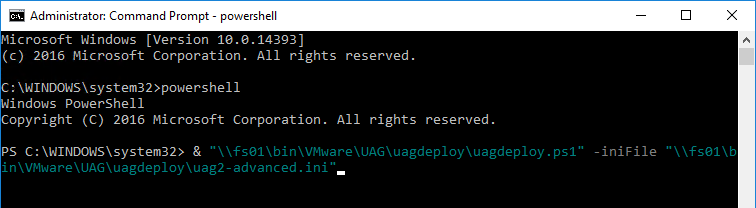
- You'll be prompted to enter the root password for the UAG appliance. Make sure the password meets password complexity requirements.
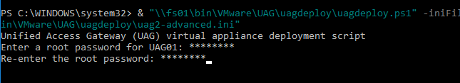
- You'll be prompted to enter the admin password for the UAG appliance. Make sure the password meets password complexity requirements.
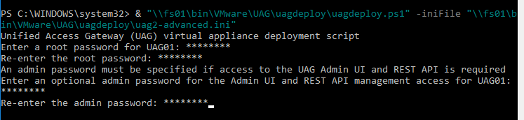
- For CEIP, enter yes or no.
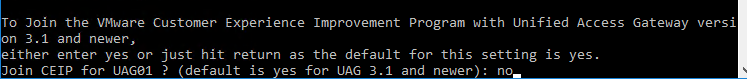
- For .pfx files, you'll be prompted to enter the password for the .pfx file. Note: the .pfx file must be local, not UNC.
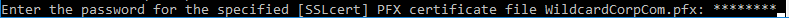
- OVF Tool will prompt you for the vCenter password. Special characters in the vCenter password must be encoded. Use a URL encoder tool (e.g., https://www.urlencoder.org/) to encode the password. Then paste the encoded password when prompted by the ovftool. The UAG passwords do not need encoding, but the vCenter password does.
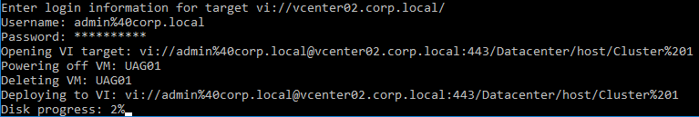
- The deploy script will display the IP address of the powered on UAG appliance.
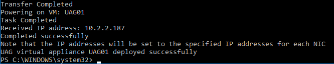
- Review settings in the UAG admin interface.
- Add the new UAG appliance to Horizon Console.
Upgrade
To upgrade from an older appliance, you delete the old appliance and import the new one. Before deleting the older appliance, export your settings:
- Login to the UAG at https://
- In the Configure Manually section, click Select.
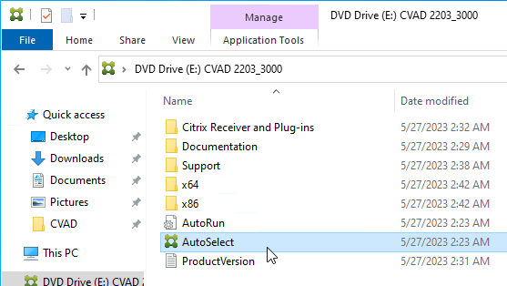
- Scroll down to the Support Settings section, and then click the JSON button next to Export Unified Access Gateway Settings.
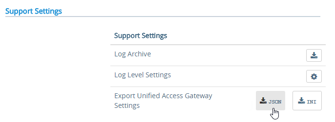
- Note: the exported JSON file does not include the UAG certificate, so you'll also need the .pfx file. If RADIUS is configured, then during import you'll be prompted to enter the RADIUS secret.
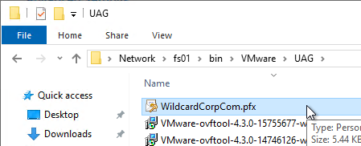
Deploy New
Horizon Compatibility - Refer to the interoperability matrix to determine which version of Unified Access Gateway is compatible with your version of Horizon.
-
The latest version of UAG is 2503.
- You usually want the Non-FIPS version.
- You usually want the Non-FIPS version.

To deploy the Unified Access Gateway using VMware vSphere Client:
- If vSphere Client, right-click a cluster, and click Deploy OVF Template.
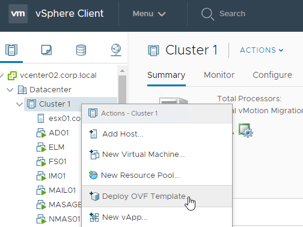
- Select Local File and click Upload Files. In the Open window, browse to the downloaded euc-unified-access-gateway.ova file, and click Next.
- In the Select a name and folder page, give the machine a name, and click Next.
- In the Review Details page, click Next.
- In the Select configuration page, select a Deployment Configuration. See Network Segments at Unified Access Gateway Architecture at Omnissa Tech Zone. Click Next.
- In the Select storage page, select a datastore, select a disk format, and click Next.
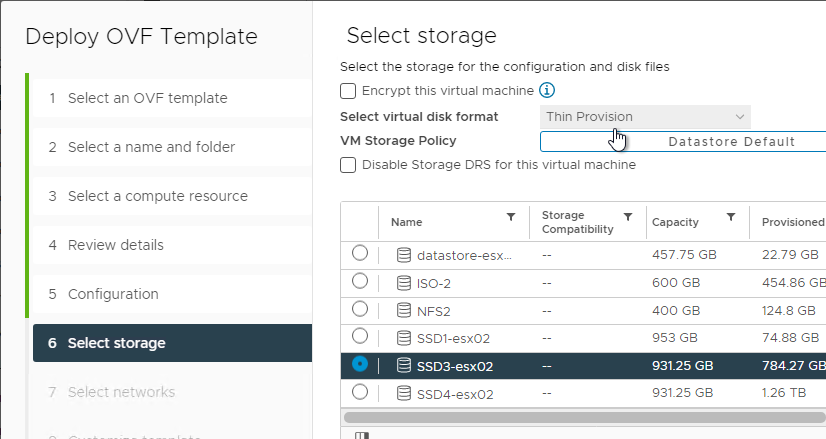
- In the Select networks page, even if you select Single NIC, the OVF deployment wizard asks you for multiple NICs. UAG typically goes in the DMZ.
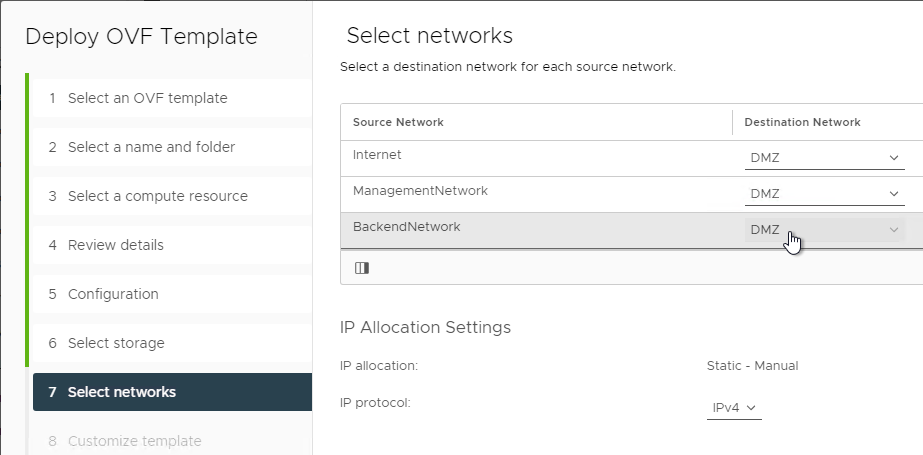
- In the Customize template page, select STATICV4, and scroll down.
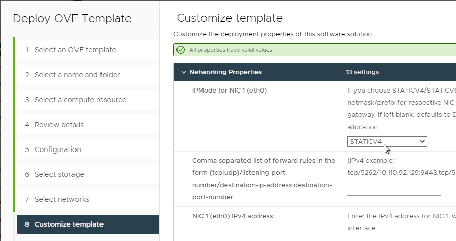
- In the NIC1 (eth0) IPv4 address field, enter the NIC1 (eth0) IPv4 address. Scroll down.
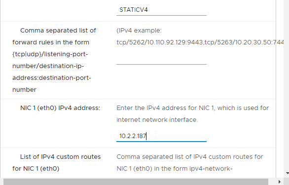
- Enter DNS addresses, Gateway, and Subnet Mask. Scroll down.
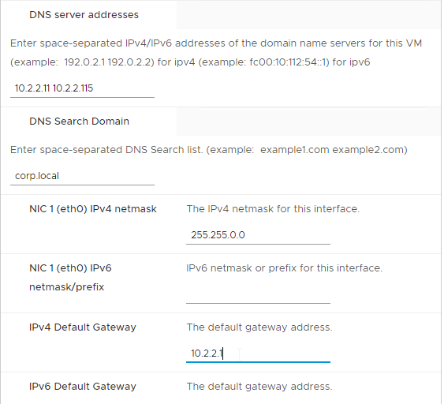
- Scroll down and enter more IP info.
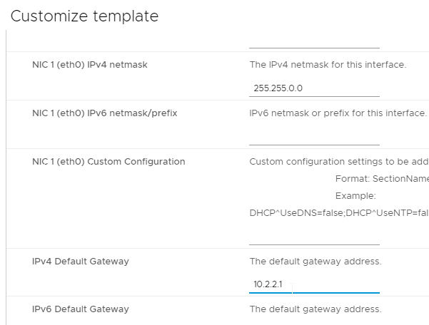
- Scroll down.
- Enter a Unified Gateway Appliance Name.
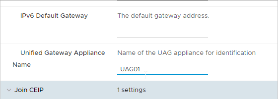
- Scroll down.
- UAG 2207 and newer let you specify the local root username.
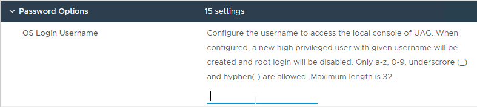
- Enter passwords.
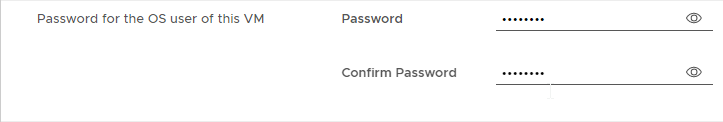
- UAG 20.12 (2012) and newer let you specify Password Policy settings when deploying the OVF.
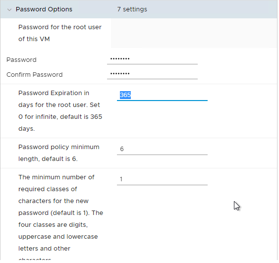
- UAG 20.12 (2012) and newer let you specify Password Policy settings when deploying the OVF.
- Scroll down and enter the password for the admin user.
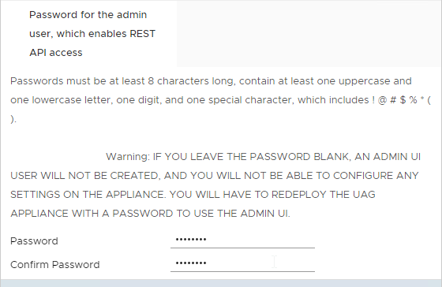
- UAG 2207 and newer have an adminreset command if you mess up the admin interface login. There's also an adminpwd command to reset the password.
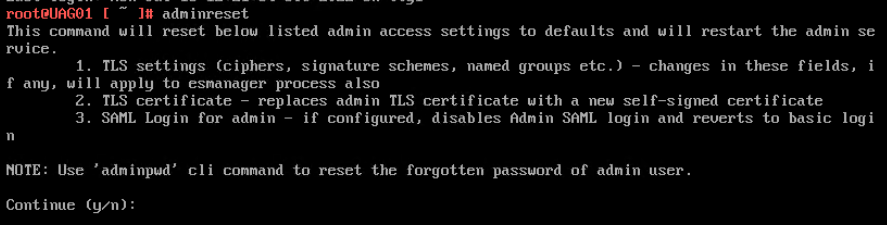
- UAG 2207 and newer have an option to enable DISA STIG compliance, usually on the FIPS version of UAG.
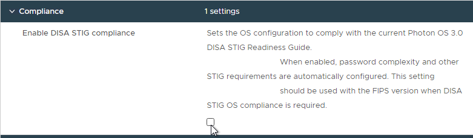
- There's a checkbox for Enable SSH.
- In UAG 3.9 and newer, there's an option to login using a SSH key/pair instead of a password.
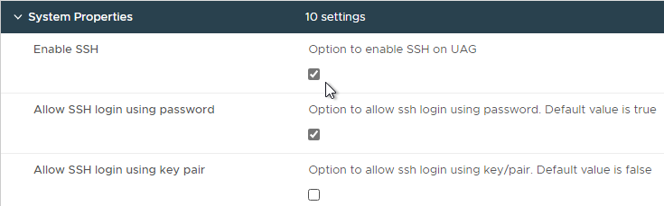
- Newer versions of UAG have more SSH options.
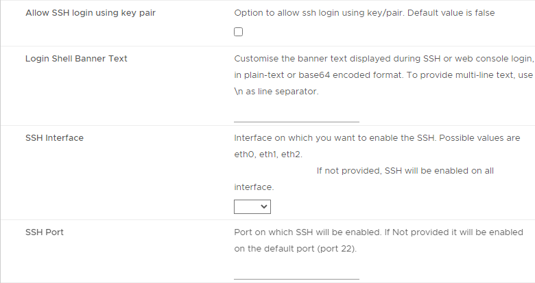
- UAG 2207 adds Commands to Run on First Boot or Every Boot.
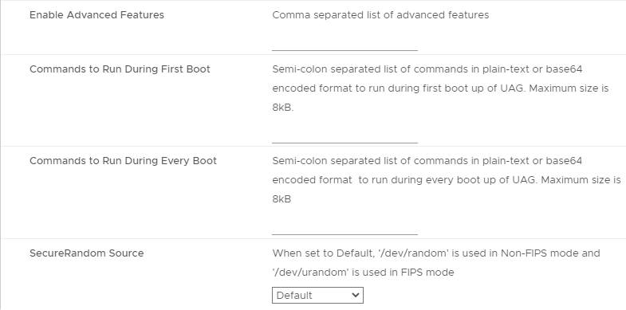
- Click Next.
- In the Ready to complete page, click Finish.
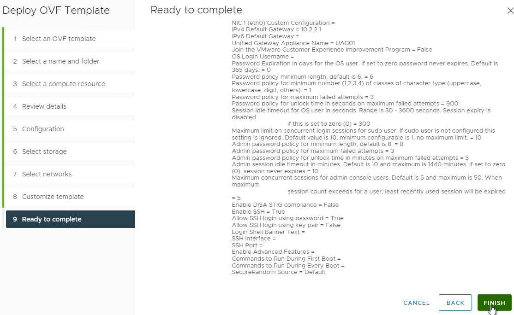


UAG Admin Interface
- Power on the Unified Access Gateway appliance.
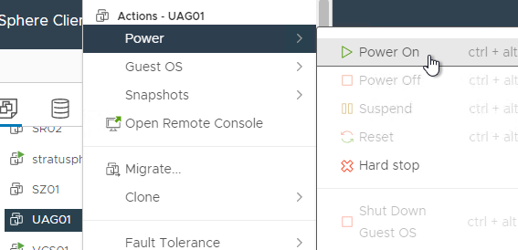
- Point your browser to https://My_UAG_IP:9443/admin/index.html and login as admin. It might take a few minutes before the admin page is accessible.
- UAG 2207 and newer have an adminreset command if you mess up the admin interface login. There's also an adminpwd command to reset the password.

Import Settings
- If you have previously exported settings, you can import it now by clicking Select in the Import Settings section.
- Browse to the previously exported UAG_Settings.json file and then click Import. Note that this json file might have old settings, like old ciphers. Review the file to ensure you're not importing legacy configurations. If the .json file has a SHA-1 thumbprint, then edit the file and replace it with SHA-256 thumbprint (fingerprint).
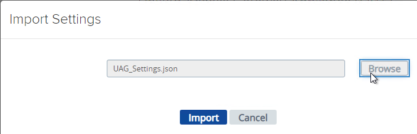
- It should say UAG settings imported successfully. If you don't see this, then your .json file probably has a SHA-1 thumbprint.
- Press
on your keyboard to refresh the browser. - The .json file does not include the certificate so you'll have to do that separately. In the Admin console, in the Advanced Settings section, click TLS Server Certificate Settings.
- Check the box next to Internet Interface. Optionally uncheck the box next to Admin Interface.
- Change the drop-down for Certificate Type to PFX.
- In the row Upload PFX, click Select and browse to your PFX file.
- In the Password field, enter the PFX password and then click Save.


Configure Horizon Settings
- To manually configure the appliance, under Configure Manually, click Select.
- Click the slider for Edge Service Settings.
- Click the gear icon for Horizon Settings.
- Click the slider for Enable Horizon.
- As you fill in these fields, hover over the information icon to see the syntax.
- The Connection Server URL should point to the internal load balanced DNS name (URL) for your internal Connection Servers.
- For the Connection Server URL Thumbprint, get the thumbprint from the internal Horizon certificate. Point your browser to the internal Horizon Connection Server FQDN (load balanced) and click the padlock icon to open the certificate.

- On the Details tab, copy the SHA-256 Fingerprint. Note that SHA-1 thumbprint is no longer supported.

- For the Connection Server URL Thumbprint, get the thumbprint from the internal Horizon certificate. Point your browser to the internal Horizon Connection Server FQDN (load balanced) and click the padlock icon to open the certificate.
- In the Proxy Destination URL Thumb Prints field, type in
**sha256=**and paste the certificate thumbprint. - At the beginning of the Thumbprint field, immediately after the equals sign, there might be a hidden character. Press the arrow keys on the keyboard to find it. Then delete the hidden character.
-
Enable the three PCOIP, Blast, and Tunnel Gateways and perform the following configurations:
- For PCOIP External URL, enter the external IP and
**:4172**. The IP should point to your external load balancer that's load balancing UDP 4172 and TCP 4172 to multiple Unified Access Gateways. -
For Blast External URL, enter https://
:8443 (e.g. https://view.corp.com:8443). This FQDN should resolve to your external load balancer that's load balancing UDP 8443 and TCP 8443 to multiple Unified Access Gateways. - You could change the Blast port to 443 but this would increase CPU utilization on UAG. See Omnissa 78419 Unified Access Gateway (UAG) high CPU utilization.
- Link: Troubleshooting Blast at Omnissa Discussions
- For Enable UDP Tunnel Server, enable the setting.
- For Tunnel External URL, enter https://
:443 (e.g., https://view.corp.com:443). This FQDN should resolve to your external load balancer that's load balancing TCP 443 to multiple Unified Access Gateways. - The external load balancer must be capable of using the same persistence across multiple port numbers. On NetScaler, this feature is called Persistency Group. On F5, the feature is called Match Across.
- Then click More.
- Unified Access Gateway has a default list of paths it will forward to the Horizon Connection Server. You can edit the Proxy Pattern and add
|/downloads(.*)to the list so that users can also download Horizon Clients that are stored on your Horizon Connection Servers as detailed elsewhere at carlstalhood.com. Make sure you click Save at least once so it saves the default Proxy Pattern. Then go back in and add|/downloads(.*)to the end of the Proxy Pattern but inside the last parentheses. In UAG 2406, the default Proxy Pattern looks something like below:
- For PCOIP External URL, enter the external IP and
-
Scroll down and click Save when done.
- If you click the arrow next to Horizon Settings, then it shows you the status of the Edge services. It might take a minute or two to start working.
-
In your Horizon Connection Servers, the Secure Gateways (e.g. PCoIP Gateway) should be disabled.
- Go to Horizon Console.
- Expand Settings and click Servers. On the right, switch to the tab named Connection Servers. Highlight your Connection Servers and click Edit.
- Then uncheck or disable all three Tunnels/Gateways.
- HTML Access probably won't work through Unified Access Gateway. You'll probably see the message Failed to connect to the Connection Server.
- To fix this, configure on each Connection Server the file C:\Program Files\Omnissa\Horizon\Server\sslgateway\conf\locked.properties (or C:\Program Files\VMware\VMware View\Server\sslgateway\conf\locked.properties) to disable Origin Check (checkOrigin=false) or configure the Connection Server's locked.properties with the UAG addresses. Also see 2144768 Accessing the Horizon View Administrator page displays a blank error window in Horizon 7.
- Horizon 2106 and newer enable CORS by default so you'll need to either disable CORS by adding enableCORS=false to C:\Program Files\Omnissa\Horizon\Server\sslgateway\conf\locked.properties (0r C:\Program Files\VMware\VMware View\Server\sslgateway\conf\locked.properties) or configure the portalHost entries in locked.properties as detailed at 85801 Cross-Origin Resource Sharing (CORS) with Horizon 8 and loadbalanced HTML5 access.
- After modifying the locked.properties file, restart the Omnissa Horizon Secure Gateway (or VMware Horizon View Security Gateway Component) service.


Add UAG to Horizon Console
In Horizon 7.7 and newer, you can add UAG 3.4 and newer to Horizon Console so you can check its status in the Dashboard.
- In UAG Admin console, under Advanced Settings, click the gear icon next to System Configuration.
- At the top of the page, change the UAG Name to a friendly name. You'll use this case-sensitive name later.
- Click Save at the bottom of the page.
- In Horizon Administrator Console, on the left, expand Settings and click Servers. On the right, switch to the tab named Gateways. Click the Register button.
- In the Gateway Name field, enter the case-sensitive friendly name you specified earlier, and then click OK.


See status of UAG appliances:
- Use a Horizon Client to connect through a Unified Access Gateway. Horizon Console only detects the UAG status for active sessions.
- In Horizon Console 7.10 and newer, to see the status of the UAG appliances, on the top left, expand Monitor and click Dashboard.
- In the top-left block named System Health, click VIEW.
- With Components highlighted on the left, on the right, switch to the tab named Gateway Servers.
- This tab shows the status of the UAG appliances, including its version. If you don't see this info, then make sure you launch a session through the UAG.


To see the Gateway that users are connected to:
- In Horizon Console 7.10 or newer, go to Monitor > Sessions.
- Search for a session and notice the Security Gateway column. It might take a few minutes for it to fill in.

UAG Authentication
SAML is configured in UAG 3.8 and newer in the Identity Bridging Settings section.
- Upload Identity Provider Metadata.
- Then in UAG Admin > Edge Service Settings > Horizon Settings > More (bottom of page), you can set Auth Methods (near top of page) to SAML only, which requires True SSO implementation, or SAML and Passthrough, which requires two logins: one to IdP, and one to Horizon.
- For complete True SSO instructions, see ../vmware-horizon-true-sso-uag-saml/.
- For Okta and True SSO, see Enabling SAML 2.0 Authentication for Horizon with Unified Access Gateway and Okta: VMware Horizon Operational Tutorial at Omnissa Tech Zone.
- For Azure MFA, see Sean Massey Integrating Microsoft Azure MFA with VMware Unified Access Gateway 3.8.


For RADIUS authentication:
- Enable the Authentication Settings section and configure the settings as appropriate for your requirements. See Configuring Authentication in DMZ at VMware Docs.
- When configuring RADIUS, if you click More, there's a field for Login page passphrase hint.
- When configuring RADIUS, if you click More, there's a field for Login page passphrase hint.
- Then in Edge Service Settings > Horizon Settings > More (bottom of page), you can set Auth Methods (near top of page) to RADIUS.
- If you scroll down the Horizon Settings page, you'll see additional fields for RADIUS.
- In UAG 3.8 and newer, Passcode label field can be customized for MFA providers like Duo.
- If your RADIUS is doing Active Directory authentication (e.g. Microsoft Network Policy Server with Azure MFA), then Enable Windows SSO so the user isn't prompted twice for the password.


Other UAG Configurations
- UAG 3.8 and newer shows when the admin password expires in Account Settings in the Advanced Settings section.
-
Ciphers are configured under Advanced Settings > System Configuration.
-
The default ciphers in UAG 2412 are the following and include support for TLS 1.3.
TLS_ECDHE_RSA_WITH_AES_128_GCM_SHA256,TLS_ECDHE_RSA_WITH_AES_256_GCM_SHA384,TLS_ECDHE_RSA_WITH_CHACHA20_POLY1305_SHA256,TLS_ECDHE_RSA_WITH_AES_256_CBC_SHA384,TLS_ECDHE_RSA_WITH_AES_128_CBC_SHA256,TLS_AES_128_GCM_SHA256,TLS_AES_256_GCM_SHA384,TLS_CHACHA20_POLY1305_SHA256 -
In UAG older than 2103, Syslog is also configured here. In UAG 2103 and newer, Syslog is in a different menu as described below.
- At the bottom of the System Configuration page are several settings for SNMP, DNS, and NTP.
- UAG 20.12 (2012) and newer support SNMPv3.
- UAG 3.10 and newer have Admin Disclaimer Text.
- You can add NTP Servers.
- Session Timeout is configured in System Configuration. It defaults to 10 hours.
-
UAG 3.6 and newer let you add static routes to each NIC.
-
Click Network Settings.
- Click the gear icon next to a NIC.
- Click IPv4 Configuration to expand it and then configure IPv4 Static Routes.
- UAG 2103 and newer have a different menu item for Syslog Server Settings.
- You can specify up to two Syslog servers.
- You can include System Messages.
- UAG 2207 supports MQTT when adding Syslog servers.
-
UAG 20.09 (2009) and newer can automatically install patches/updates when the appliance reboots.
-
In the Advanced Settings section, click Appliance Updates Settings.
- For Apply Updates Scheme, select an option. Click Save.
- UAG supports High Availability Settings.
-
With the High Availability Virtual IP address, you might not need load balancing of the UAG appliances. See Unified Access Gateway High Availability at Omnissa Docs.
-
The High Availability feature requires three IP addresses and three DNS names:
- One IP/FQDN for the High Availability Virtual IP.
- And one IP/FQDN for each appliance/node.
2. The Horizon Edge Gateways should be set to node-specific IP addresses and node-specific DNS names. Each appliance is set to a different IP/FQDN.
3. The Virtual IP (and its DNS name) is only used for the High Availability configuration.
4. The YouTube video High Availability on VMware Unified Access Gateway Feature Walk-through explains the High Availability architecture.
- Set the Mode to ENABLED.
- Enter a new Virtual IP Address which is active on both appliances.
- Enter a unique Group ID between 1 and 255 for the subnet.
- Click Save.
- On the second appliance, configure the exact same High Availability Settings.
- To upload a valid certificate, scroll down to the Advanced Settings section, and next to TLS Server Certificate Settings, click the gear icon.
- In Unified Access Gateway 2312 and newer, click Edit in the Internet section.
- In Unified Access Gateway 3.2 and newer, you can apply the uploaded certificate to Internet Interface, Admin Interface, or both.
- In Unified Access Gateway 3.0 and newer, change the Certificate Type to PFX, browse to a PFX file, and then enter the password. This PFX file certificate must match the Public FQDN (load balanced) for Unified Access Gateway. If your load balancer is terminating SSL, then the certificate on the UAG must be identical to the certificate on the load balancer.
- Leave the Alias field blank.
- Click Save.
- If you changed the Admin Interface certificate, then you will be prompted to close the browser window and re-open it.
- In Unified Access Gateway 2312 and newer, click Edit in the Internet section.
- Or, you can upload a PEM certificate/key (this is the only option in older UAG). Next to Private Key, click the Select link.
- Browse to a PEM keyfile. If not running Unified Access Gateway 3.0 or newer, then certificates created on Windows (PFX files) must be converted to PEM before they can be used with Unified Access Gateway. You can use openssl commands to perform this conversion. The private key should be unencrypted.
- Browse to a PEM certificate file (Base-64) that contains the server certificate, and any intermediate certificates. The server certificate is on top, the intermediate certificates are below it. The server certificate must match the public FQDN (load balanced) for the Unified Access Gateway.
- Click Save when done.
- Browse to a PEM keyfile. If not running Unified Access Gateway 3.0 or newer, then certificates created on Windows (PFX files) must be converted to PEM before they can be used with Unified Access Gateway. You can use openssl commands to perform this conversion. The private key should be unencrypted.
- UAG 3.1 and newer have an Endpoint Compliance Check feature. The feature requires an OPSWAT subscription. Newer versions of UAG can deploy the OPSWAT agent. It's pass/fail. See Configure OPSWAT as the Endpoint Compliance Check Provider for Horizon at VMware Docs.
- UAG 3.9 and newer let you upload the Opswat Endpoint Compliance on-demand agent executables. Horizon Client downloads the executables from UAG and runs them. See Upload OPSWAT MetaAccess on-demand agent Software on Unified Access Gateway at VMware Docs.
- In UAG 20.09 and newer, Outbound Proxy Settings can be configured to allow UAG to contact the Opswat servers when checking for device compliance.
- UAG 3.9 and newer let you upload the Opswat Endpoint Compliance on-demand agent executables. Horizon Client downloads the executables from UAG and runs them. See Upload OPSWAT MetaAccess on-demand agent Software on Unified Access Gateway at VMware Docs.
- Scroll down to Support Settings and click the icon next to Export Unified Access Gateway Settings to save the settings to a JSON file. If you need to rebuild your Unified Access Gateway, simply import the the JSON file.
- The exported JSON file does not include the UAG certificate, so you'll also need the .pfx file.

- The exported JSON file does not include the UAG certificate, so you'll also need the .pfx file.
- If you point your browser to the Unified Access Gateway external URL, you should see the Horizon Connection Server portal page. Horizon Clients should also work to the Unified Access Gateway URL.
-
-


Monitor Sessions
In UAG 3.4 and newer, in the UAG Admin interface,
- At the top of the page, next to Edge Service Settings, you can see the number of Active Sessions on this appliance.
- At the bottom of the page, under Support Settings, click Edge Service Session Statistics to see more details.
In older versions of UAG, to see existing Horizon connections going through UAG, point your browser to https://uag-hostname-or-ip-addr:9443/rest/v1/monitor/stats.
Logs and Troubleshooting
You can download logs from the Admin Interface by clicking the icon next to Log Archive.
You can also review the logs at /opt/vmware/gateway/logs. You can less these logs from the appliance console.
Or you can point your browser to https://MyApplianceIP:9443/rest/v1/monitor/support-archive. This will download a .zip file with all of the logfiles. Much easier to read in a GUI text editor.
For initial configuration problems, check out admin.log.
For Horizon View brokering problems, check out esmanager.log.
By default, tcpdump is not installed on UAG. To install it, login to the console and run /etc/vmware/gss-support/install.sh
- More info at Justin Johnson Troubleshooting Port Connectivity For Horizon’s Unified Access Gateway 3.2 Using Curl And Tcpdump
Load Balancing
If NetScaler, see ../vmware-horizon-unified-access-gateway-load-balancing-citrix-adc/ load balance Unified Access Gateways.
To help with load balancing affinity, UAG 3.8 and newer can redirect the load balanced DNS name to a node-specific DNS name. This is configured in Edge Service Settings > Horizon Settings > More (bottom of page).
Related Pages
- Back to Omnissa Horizon 8